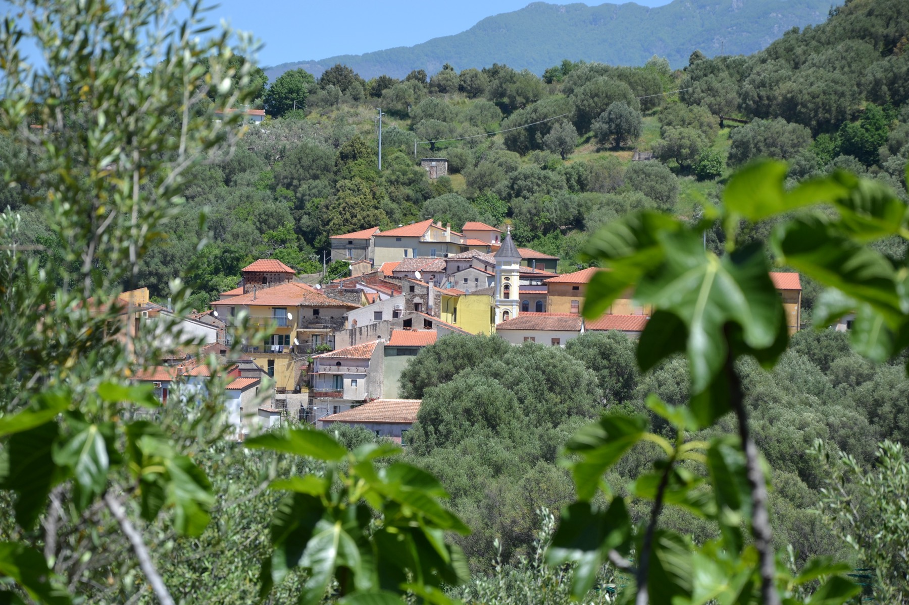

Ascea Turismo 360:
una finestra sul territorio
Ascea Turismo 360 è il portale dedicato alla scoperta di Ascea. Una finestra sul territorio pensata per accompagnare visitatori e viaggiatori alla scoperta di tutte le sue bellezze, dai luoghi più iconici ai meno conosciuti, dalle esperienze da vivere ai posti in cui soggiornare.
La lunghissima spiaggia di Ascea Marina, il fascino del Parco Archeologico di Velia, i percorsi della rete sentieristica, Palazzo De Dominicis-Ricci ad Ascea Capoluogo, il Santuario della Madonna del Carmine a Catona sono solo alcuni dei luoghi di interesse storico, culturale e naturalistico presenti nel portale.
Uno strumento che attraverso approfondimenti e informazioni utili, vuole essere il punto di riferimento per chi desidera conoscere Ascea e anche prenotare la struttura ricettiva presso la quale soggiornare.
Esplora, visita, innamorati di Ascea.

I borghi
Il fascino di Ascea: borghi da vivere, storie da raccontare

Ascea Paese
L’affascinante centro storico dove perdersi tra vicoli suggestivi, antiche tradizioni e scorci storici unici.

Ascea Marina
Dove convivono la lunga spiaggia di sabbia dorata e la storia millenaria del Parco Archeologico di Velia.

Mandia
La frazione più interna incastonata tra uliveti secolari e rigogliosi castagneti.

Terradura
Un’oasi rurale ricca di storia e paesaggi incontaminati con le sue radici italo-greche.

Catona
Un'oasi di pace e spiritualità, custode del Santuario della Madonna del Carmine.
I luoghi da vivere
Un itinerario suggestivo tra le acque cristalline di Ascea Marina, l'eredità millenaria del Parco Archeologico di Elea-Velia e i sentieri immersi nella macchia mediterranea, dove natura, storia e cultura si incontrano.
News ed eventi
Le notizie che raccontano Ascea, le sue frazioni e località, gli eventi e le esperienze che si possono vivere sul territorio.


Esplora la mappa
Scopri i luoghi da vivere, i punti di interesse e dove soggiornare ad Ascea.
Apri la mappa completa